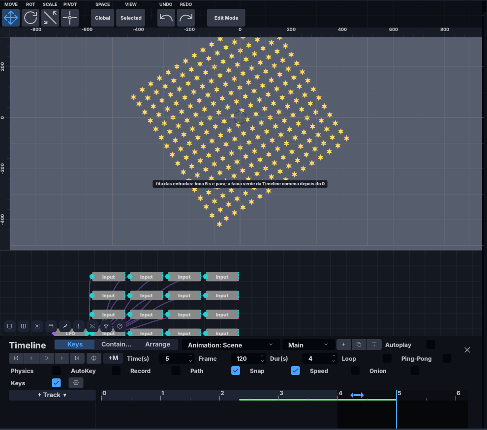
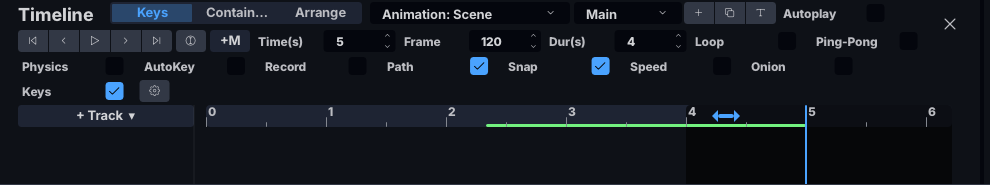
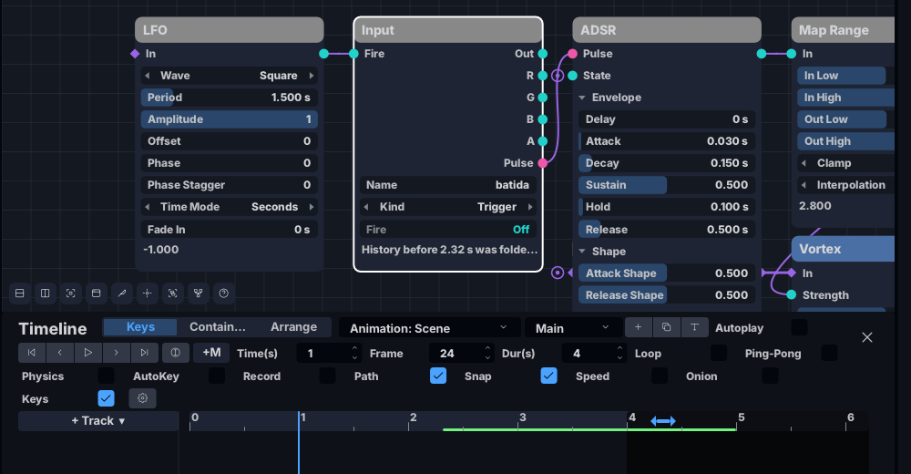
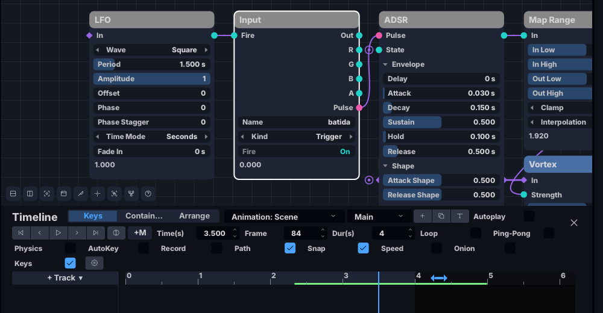
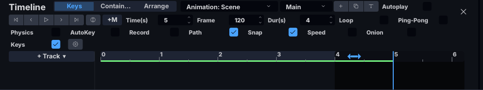

No tutorial 12 o grafo passou a ouvir o jogo (os cartões Input), e o que o
jogo mandou fica gravado numa fita, para que voltar atrás repita o que se viu. Aqui você vai
ver essa fita: uma faixa verde por baixo dos segundos da Timeline mostra até onde vai a
história guardada. A fita tem um tecto de memória; quando enche, o começo da história é
dobrado (resumido num valor só) e a faixa passa a começar mais tarde. Arrastar a régua para
antes da faixa continua a funcionar, e o cartão Input avisa que ali mostra
as entradas do começo da faixa, não as daquele segundo.

Cole isto inteiro num terminal. Na primeira vez ele compila (alguns minutos); depois abre em
segundos. O 384k é um tecto de propósito pequeno, para a fita encher em
segundos em vez de horas.
batida sacode. Por baixo, o grafo tem uma grelha de
16 cartões Input (sinal_0 … sinal_15) que disparam a
cada instante — são o «jogo» desta cena: muitas entradas a mudar sempre. Ao fim de 5 s o
relógio pára sozinho e o campo Time(s) da Timeline diz 5.Keys · Contain… · Arrange — não confundir
com a caixa Keys mais abaixo, que é do Onion).

Keys: a faixa verde (a história guardada) começa em ~2,3 s.
A zona escura depois do 4 é o fim da duração da Timeline (Dur(s) = 4), não a
fita.Keys, arraste a régua (a tira com os números 0 1 2 3…) até ao
3,5 e solte.
Time(s) diz
3.500, e as estrelas voltam à posição que tinham aos 3,5 s — a simulação é
repetida, com o que o jogo mandou naquele instante. A faixa verde fica onde estava.Input. Os nomes e as linhas dos cartões só se leem com o
grafo aproximado: clique num cartão Input e, com o rato sobre o grafo,
carregue F — o grafo aproxima esse cartão. (Se ele continuar uma pílula sem
linhas, o painel do grafo está baixo: use a roda do rato sobre o grafo para aproximar mais.)
History before 2.32 s was folded - showing 2.32 s: a história antes de
2,32 s foi dobrada, e o que se vê usa as entradas de 2,32 s. ⚠️ O cartão corta a frase na
largura dele — lê-se History before 2.32 s was folde…. Todos os cartões
Input dizem o mesmo (a fita é uma só).
Input da batida,
aproximado com F, diz History before 2.32 s was folde…; a faixa verde
continua de ~2,3 s a 5 s.
Fire = On).Arrange e arraste a régua.
Keys. Sem pistas na Arrange há um relógio só: as duas abas
mexem o mesmo tempo, e o aviso do cartão aparece igual.Sem o PH2D_MOTION_FITA_BYTES, o tecto é 1/32 da memória do computador,
partilhado por todas as fitas abertas. Nesta máquina (128 GB) isso dá 3,85 GB de fita; num
computador de 8 GB, 256 MB. Por isso, sem a variável, esta cena não dobra em 5 s: a faixa
começa no 0.
Tecto da fita agora: … bytes diz o tecto que valeu
(com 384k ela diz 393216).
| o quê | onde | o que faz |
|---|---|---|
| a faixa verde | régua da Timeline | a história guardada: do começo dela (o fim da parte dobrada) ao último segundo gravado |
aba Keys | Timeline | sem pistas na Arrange, a régua
mexe o relógio da cena — o que o Motion lê |
aba Arrange | Timeline | a régua da cena; sem pistas, o MESMO
relógio da Keys |
History before X s was folded - showing X s | cartão
Input | a régua está antes da faixa: o que se vê usa as entradas do segundo X |
Inputs were not recorded here - showing the current values | cartão
Input | a régua está num segundo que a fita nunca gravou: usa os valores de agora (nesta cena a fita grava desde o 0, por isso não aparece) |
scene stays: clip not in Arrange · scene stays: clip plays 2x in
Arrange | barra da Timeline, aba Keys | com um clip aberto, a
cena não segue a régua: o clip não toca na Arrange, ou toca duas vezes (ver
«Vá além») |
PH2D_MOTION_FITA_BYTES | linha de comando | o tecto da fita à mão:
384k, 4m, 1g; sem ela, 1/32 da memória |
PH2D_MOTION_FITA_SCRUB | linha de comando | só para fotografar:
depois da paragem, leva a régua a esse segundo e aproxima o cartão da batida, uma
vez |
PH2D_MOTION_FITA_BYTES=128k no lugar do
384k: a faixa descola do 0 mais cedo e fica mais curta.StackDemo) com dois clips, Left e
Right, numa pista Lane 1 da Arrange:
Left toca de 0 a 3 s, Right de 2 a 5 s. Pare o relógio (o botão
▷ do meio da Timeline). Na aba Keys, no menu do clip escolha Right
e arraste a régua para o 1.
Keys é a do clip (0 = o começo do
clip), e a cena vai ao segundo certo: 3 s (o clip começa no 2 da cena, mais 1). Clique
em Arrange: a linha do tempo está no 3.Arrange, clique com o botão direito na faixa Right →
Duplicate Strip (a cópia fica logo a seguir, de 5 a 8 s). Volte à
Keys e arraste a régua.
scene stays: clip plays 2x in Arrange.
Apague as duas faixas Right (botão direito → Delete Strip) e
arraste outra vez: scene stays: clip not in Arrange.Medido nesta máquina (doc 132, com o computador ocupado — vale como ordem de grandeza): a fita guarda só o que muda, a cada instante (60 por segundo).
| entradas a mudar sempre | bytes por instante | história com 8 GB (fita de 256 MB) | história com 128 GB (fita de 3,85 GB) |
|---|---|---|---|
| 3 | 215 | 348 min | 89 h |
| 30 | 1 546 | 48 min | 12,4 h |
| 300 | 14 860 | 5 min | 77 min |
O tecto é um só para todas as fitas do app: cem objectos Motion não pedem cem tectos.
| o que você vê | o que reportar |
|---|---|
não há faixa verde, ou ela começa no 0 com o 384k | uma foto da
Timeline e a linha Tecto da fita agora do terminal |
| a faixa some depois de arrastar a régua para trás | para que segundo arrastou, e em que aba |
| a régua anda e as estrelas não | a aba (Keys ou
Arrange) |
| o cartão não avisa antes da faixa, ou avisa dentro dela | o segundo da régua e o começo da faixa |
o aviso do cartão acaba em folde… | já conhecido: o cartão corta a frase na largura dele (a frase inteira está na secção 3) |
| com um clip aberto a cena não vai ao segundo certo | onde estão as faixas do clip
na Arrange e o que diz a barra |